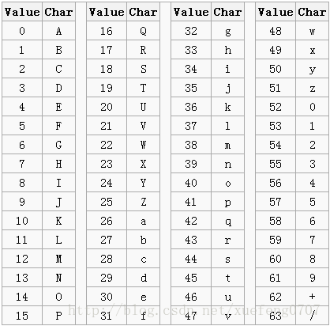
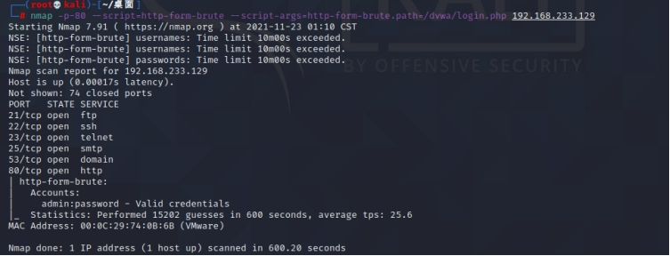
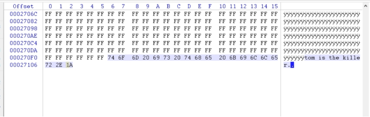

渗透测试-实验一
实验一 网络扫描与网络侦察
说明：红色部分无需写入实验报告。实验完成后形成实验报告电子版。
（这typora换颜色还得一个个改，我就懒得换了，就是实验原理部分）
实验目的
理解网络扫描、网络侦察的作用；通过搭建网络渗透测试平台，了解并熟悉常用搜索引擎、扫描工具的应用，通过信息收集为下一步渗透工作打下基础。
系统环境
Kali Linux 2、Windows
网络环境
交换网络结构
实验工具
Metasploitable2（需自行下载虚拟机镜像）；Nmap（Kali）；WinHex、数据恢复软件等
实验原理
- 网络扫描与网络侦察的目的
黑客在进行一次完整的攻击之前除了确定攻击目标之外，最主要的工作就是收集尽量多的关于攻击目标的信息。这些信息主要包括目标的操作系统类型及版本、目标提供哪些服务、各服务的类型、版本以及相关的社会信息。
攻击者搜集目标信息一般采用七个基本的步骤：
（1） 找到初始信息，比如一个IP地址或者一个域名；
（2） 找到网络地址范围，或者子网掩码；
（3） 找到活动机器；
（4） 找到开放端口和入口点；
（5） 弄清操作系统；
（6） 弄清每个端口运行的是哪种服务；
（7） 找到目标可能存在的漏洞。
- Google Hacking（或baidu）
Google Hacking 是利用谷歌搜索的强大，来在浩瀚的互联网中搜索到我们需要的信息。轻量级的搜索可以搜素出一些遗留后门，不想被发现的后台入口，中量级的搜索出一些用户信息泄露，源代码泄露，未授权访问等等，重量级的则可能是mdb文件下载，CMS 未被锁定install页面，网站配置密码，php远程文件包含漏洞等重要信息。
- BASE64编码

BASE64是一种编码方式，通常用于把二进制数据编码为可写的字符形式的数据。
编码后的数据是一个字符串，其中包含的字符为：A-Z、a-z、0-9、+、/共64个字符。（其实是65个字符，“=”是填充字符）。
长度为3个字节(38)的数据经过Base64编码后就变为4个字节(46)。
如果数据的字节数不是3的倍数，则其位数就不是6的倍数，那么就不能精确地划分成6位的块。需在原数据后面添加1个或2个零值字节，使其字节数是3的倍数。
字符串“Xue”经过Base64编码后变为“WHVl”。
字符串“Xu”经过Base64编码后变为“WHU=”。
字符串“X”经过Base64编码后变为“WA==”。
- Nmap
Nmap是一个网络侦察和安全扫描程序，系统管理者和个人可以使用这个软件扫描大型的网络，获取哪台主机正在运行以及提供什么服务等信息。Nmap支持很多扫描技术，例如：UDP、TCP connect()、TCP SYN(半开扫描)、ftp代理(bounce攻击)、反向标志、ICMP、FIN、ACK扫描、圣诞树(Xmas Tree)、SYN扫描和null扫描。Nmap还提供了一些高级的特征，例如：通过TCP/IP协议栈特征探测操作系统类型，秘密扫描，动态延时和重传计算，并行扫描，通过并行ping扫描探测关闭的主机，诱饵扫描，避开端口过滤检测，直接RPC扫描(无须端口映射)，碎片扫描，以及灵活的目标和端口设定。
Nmap运行通常会得到被扫描主机端口的列表。Nmap总会给出well known端口的服务名(如果可能)、端口号、状态和协议等信息。每个端口的状态有：open、filtered、unfiltered。open状态意味着目标主机能够在这个端口使用accept()系统调用接受连接。filtered状态表示：防火墙、包过滤和其它的网络安全软件掩盖了这个端口，禁止Nmap探测其是否打开。unfiltered表示：这个端口关闭，并且没有防火墙/包过滤软件来隔离nmap的探测企图。通常情况下，端口的状态基本都是unfiltered状态，只有在大多数被扫描的端口处于filtered状态下，才会显示处于unfiltered状态的端口。
根据使用的功能选项，Nmap也可以报告远程主机的下列特征：使用的操作系统、TCP序列、运行绑定到每个端口上的应用程序的用户名、DNS名、主机地址是否是欺骗地址、以及其它一些东西。
- WinHex
WinHex 是一款以通用的 16 进制编辑器为核心，专门用来对付计算机取证、数据恢复、低级数据处理、以及 IT 安全性、各种日常紧急情况的高级工具： 用来检查和修复各种文件、恢复删除文件、硬盘损坏、数码相机卡损坏造成的数据丢失等。
实验步骤
1-4题为被扫描，利用搜索引擎或相关网站
- 用搜索引擎Google或百度搜索麻省理工学院网站中文件名包含“network security”的pdf文档，截图搜索得到的页面。
- 手机位置定位。通过LAC（Location Area Code，位置区域码）和CID（Cell Identity，基站编号，是个16位的数据（范围是0到65535）可以查询手机接入的基站的位置，从而初步确定手机用户的位置。
获取自己手机的LAC和CID：
Android 获取方法：Android： 拨号*##4636##*进入手机信息工程模式后查看
iphone获取方法：iPhone：拨号*3001#12345#*进入FieldTest
Serving Cell info–>LAC=Tracking Area Code –>cellid = Cell identity
若不能获取，用下图信息。
截图你查询到的位置信息。
- 编码解码
将Z29vZCBnb29kIHN0dWR5IQ==解码。截图。
- 地址信息
4.1内网中捕获到一个以太帧，源MAC地址为：98-CA-33-02-27-B5；目的IP地址为：202.193.64.34，回答问题：该用户使用的什么品牌的设备，访问的是什么网站？并附截图。
设备：苹果 网站：桂林电子科技大学
答：不相同，访问上述网站得到的是公网的ip，而ipconfig查询得到的是内网的ip地址。
- NMAP使用（两位同学配合完成）
5.1利用NMAP（攻击方）扫描发现Metasploitable2（靶机，需下载虚拟机镜像）IP地址，同时Wireshark捕获报文，分析NMAP扫描发现该主机的工作原理，即报文交互情况；
利用nmap -sP的命令对网段存活靶机进行探测。
-sP使用ping命令进行扫描。Wireshark抓包中可以看到，在同一个局域网内，主机想要发送icmp报文之前，需要获取到目标机的Mac地址，就需要先通过arp广播请求对应的mac地址，对应被请求到的ip地址的目标机会回应一个arp响应报文，其中携带了自己的MAC地址，因此在wireshark抓包中可以看到，先有了大量arp的请求报文和响应报文，等到获取到对应机各自的mac地址之后，开始正式发送icmp报文进行数据传输。-sP命令通过ping扫描，然后显示出在线的主机。使用该选项扫描可以轻易获取目标信息而不会被轻易发现。
扫描靶机端口开放情况。并附截图。说明其中四个端口（知名端口）提供的服务，查阅资料，简要说明该服务的功能。
1 | 21端口：FTP是File Transfer Protocol（文件传输协议）的英文缩写，用于Internet上的控制文件的双向传输。 |
5.2利用NMAP扫描Metasploitable2的操作系统类型，并附截图。
操作系统类型：Linux 2.6.x
Nmap 命令：-O 对主机操作系统进行探测。
扫描结果：
Host is up：表示该主机存活
Runing: 主机操作系统信息
Os details: 操作系统版本信息

5.3 利用NMAP穷举 Metasploitable2上dvwa的登录账号和密码。
输入命令：
1 | nmap -p-80 --script=http-form-brute --script-args=http-form-brute.path=/dvwa/login.php 192.168.169.149 |
5.4 查阅资料，永恒之蓝-WannaCry蠕虫利用漏洞的相关信息。
该蠕虫病毒会通过远程服务器和自身爬虫功能收集局域网内的IP列表，然后对其中的多个服务端口发起攻击，包括RPC服务(135端口)、SQLServer服务(1433端口)、FTP服务(21端口)，同时还会通过 “永恒之蓝”漏洞，入侵445端口，攻击电脑。
该变种通过与C&C服务器进行通讯以及内置的爬虫功能获取目标的IP地址及端口，对RPC服务(135端口)、SQLServer服务(1433端口)、FTP服务(21端口)进行爆破，使用永恒之蓝漏洞对445端口进行入侵，如果入侵或爆破成功则执行脚本从C&C服务器上下载初始样本，初始样本经过多重释放，最终运行Worm/Sharp蠕虫。
1 利用ZoomEye搜索一个西门子公司工控设备，并描述其可能存在的安全问题。
西门子5940-005 T1E1路由器存在弱口令，可以登录后台进行进一步的渗透测试。
6.2 利用FOFA查找MySQL服务器。
- Winhex简单数据恢复与取证
7.1 elephant.jpg不能打开了，利用WinHex修复，说明修复过程。（分析jpg文件格式）
jpg格式文件头：FFD8FF
7.2 笑脸背后的阴霾：图片smile有什么隐藏信息。

7.3 尝试使用数据恢复软件恢复你的U盘中曾经删除的文件。
- 实验小结
在本次实验中，知道一些Google 的搜索语法，比如site:网站，filetype:文件类型等，能准确快速地定位到所需信息；了解了一些nmap扫描存活主机命令使用的协议，在wireshark中对其进行捕获；还有一些nmap脚本的用法。了解了一些关于手机定位的基本信息，和常见的端口服务等。